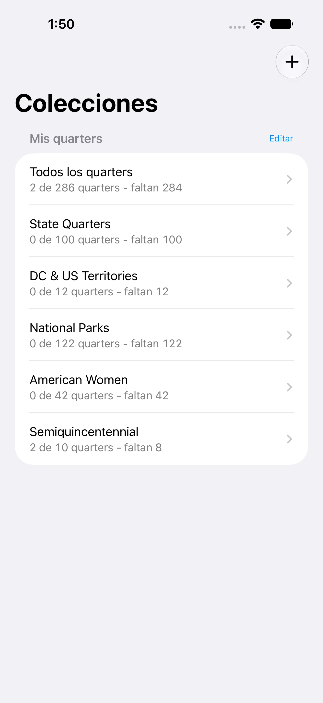
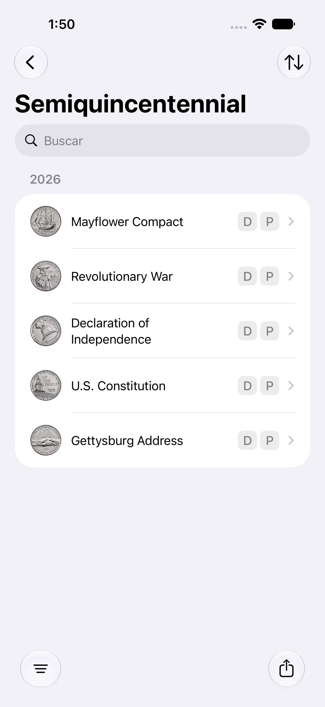
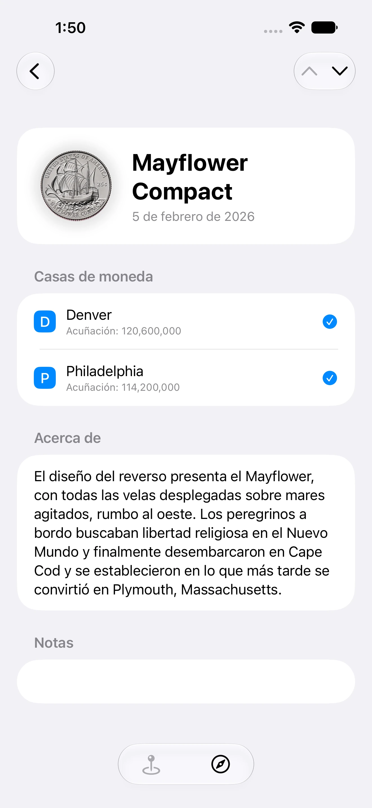
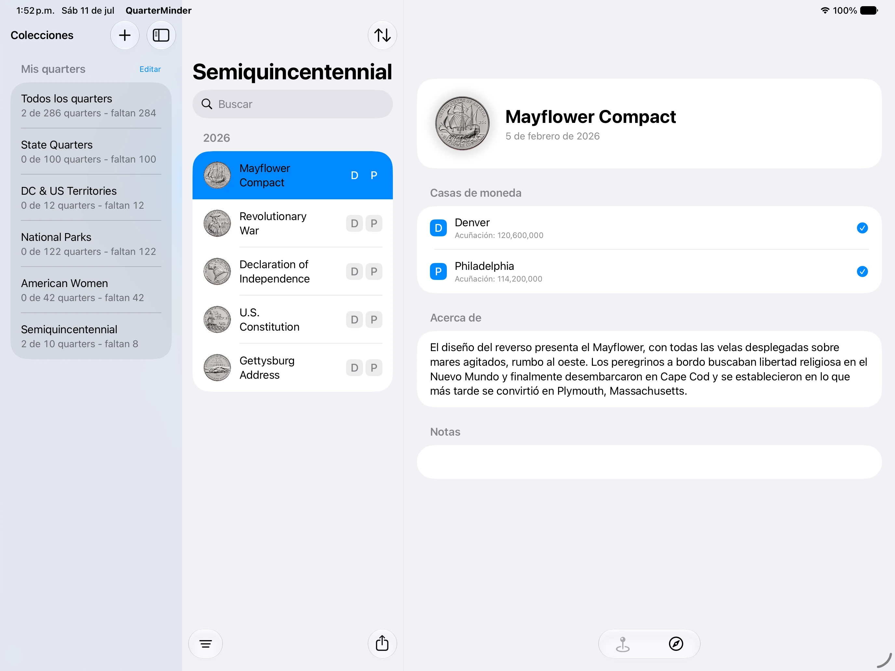

Controla las marcas de ceca
Sigue por separado el progreso de las monedas de Denver y Filadelfia para mantener un estado preciso de tu colección.
Para iPhone y iPad
Lleva el control de tu colección de monedas de 25 centavos de EE. UU. con marcas de ceca, notas, imágenes, detalles de emisión y progreso en cada programa compatible.
 No necesitas una cuenta. Tu colección permanece en tu dispositivo.
No necesitas una cuenta. Tu colección permanece en tu dispositivo.



QuarterMinder mantiene una lista práctica: lo que ya tienes, lo que todavía te falta y los detalles que facilitan identificar cada moneda.
Sigue por separado el progreso de las monedas de Denver y Filadelfia para mantener un estado preciso de tu colección.
Crea colecciones separadas para distintos álbumes, familiares, carpetas u objetivos.
Consulta imágenes grandes, información de emisión, enlaces a mapas y enlaces a la Casa de Moneda de EE. UU.
Añade notas sobre el estado, procedencia, ubicación en el álbum o cualquier otro detalle que quieras recordar.
Exporta la información de tu colección a Mensajes, Mail, Notas y las apps de redes sociales instaladas.
La compatibilidad con Dynamic Type mantiene QuarterMinder legible con el tamaño de texto que prefieras.
QuarterMinder incluye las series modernas de monedas de 25 centavos de EE. UU., incluidos programas posteriores a la serie original de los estados.
Consulta el progreso de un vistazo y abre cada moneda para ver imágenes más grandes y más detalles.
Colecciones
Las colecciones separadas facilitan el seguimiento de álbumes, carpetas, colecciones familiares u objetivos distintos sin mezclarlo todo.
Programas
Explora los programas compatibles, controla el progreso por ceca y mantén la lista enfocada en las monedas que realmente coleccionas.
Detalles
Cada moneda puede incluir imágenes ampliadas, detalles de emisión, seguimiento por ceca, notas y enlaces de referencia.
iPad
En el iPad hay espacio para imágenes, información de emisión, notas y enlaces de referencia sin que la pantalla se sienta saturada.

Descarga QuarterMinder en el App Store y mantén tu colección organizada.